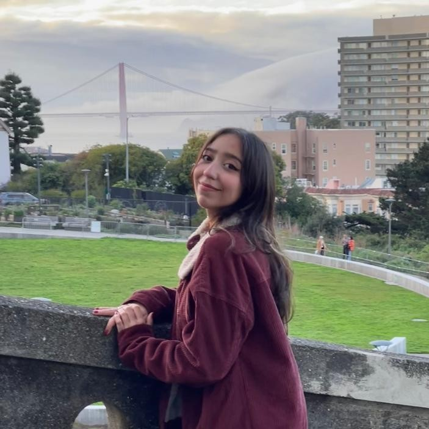
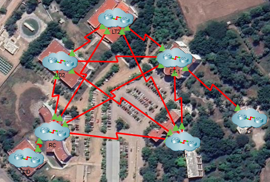
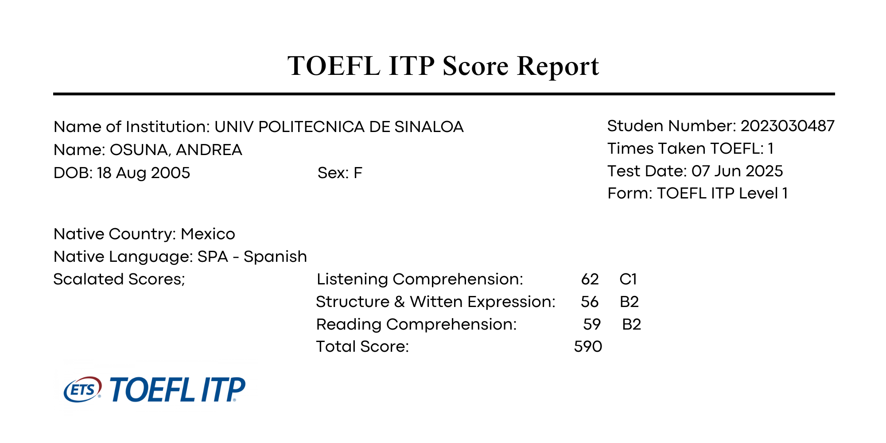
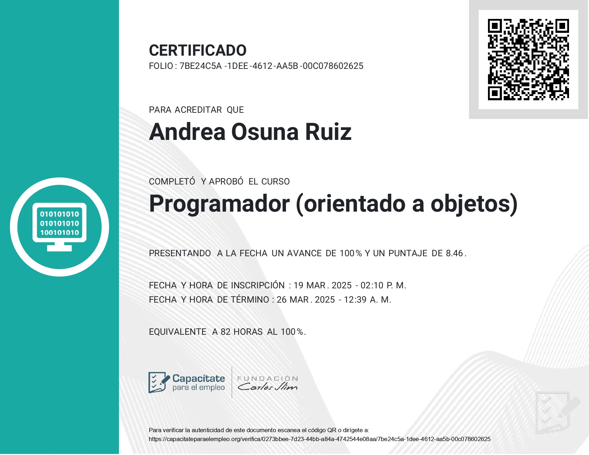

PERFIL
Soy estudiante de Ingeniería en Tecnologías de la Información, ya por finalizar mi carrera, me gusta el desarrollo web, el diseño funcional y la resolución de problemas usando la tecnología. Me gusta mantener un equilibrio entre la creatividad y la lógica técnica, buscando siempre soluciones eficientes y bien estructuradas. Soy una persona proactiva y creativa, aprendo rápido por mi cuenta y me adapto con facilidad. Me considero una buena compañera, con habilidad para el trabajo en equipo y la atención al cliente. Busco aplicar mi potencial para generar resultados reales y que beneficien a la sociedad.
- México
- Estudiante de Ingeniería en TI
- Interés: Bases de datos y Front-end
2023
Proyectos web
2024
Diseño en Figma y Redes
2025
Bases de datos y Programación Orientada a Objetos
HABILIDADES
HTML5
CSS3
MySQL
Figma
C++
Java
GitHub
VS Code
Jira
PROYECTOS
×
Pantalla login general
Cuestionario inicial para el usuario
Pantalla principal del usuario
Galería/Perfil de restaurante
KomiKomi — Figma
Diseño de una app para encontrar restaurantes en Mazatlán. La app permite filtrar por tipo de comida y ver detalles (menús, precios, horarios, reseñas y disponibilidad). Además, usa IA para dar recomendaciones personalizadas.
×

Topología propuesta

Propuesta para el edificio de TI
Propuesta de Mejora de Red — Universidad
Proyecto de infraestructura de red para mejorar la conectividad dentro de la universidad realizado en Cisco Packet Tracer. Análisis, diseño y planificación de la red, selección de equipos y materiales con su presupuesto. Implementación de protocolos.
Ver documentación
CERTIFICADOS

×

×
